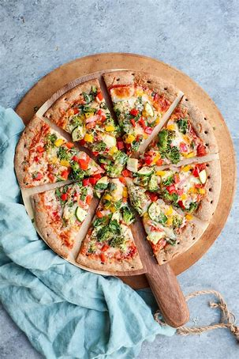

Pizza's story begins in ancient times, but the modern version was born in Naples, Italy, in the late 18th century, when flatbreads were topped with tomatoes, cheese, and other ingredients. Since then, it has evolved into a global favorite with countless variations! 🍕
Pizza is typically made of a few key ingredients:
Dough: A base made from flour, water, yeast, salt, and sometimes olive oil.
Sauce: Traditionally, a tomato-based sauce, though variations include pesto, white sauce, or even BBQ sauce.
Cheese: Mozzarella is the classic choice, but others like parmesan, cheddar, or ricotta can be used.
Toppings: These range from vegetables (like mushrooms, bell peppers, and olives) to proteins (pepperoni, chicken, or seafood). Some even go for pineapple—controversial but beloved by many!
There are 2 types of pizza:
Non-Veg:-
Includes meat toppings like chicken, pepperoni, sausage, or even seafood. Often paired with barbecue sauce or spicy seasonings for a bold taste. Perfect for meat lovers craving a hearty meal.
.jpeg)
Veg-
Loaded with fresh vegetables like tomatoes, bell peppers, onions, mushrooms, corn, and olives. Often topped with paneer or extra cheese for a rich flavor. A great choice for vegetarians and those who love crunchy, colorful toppings.
